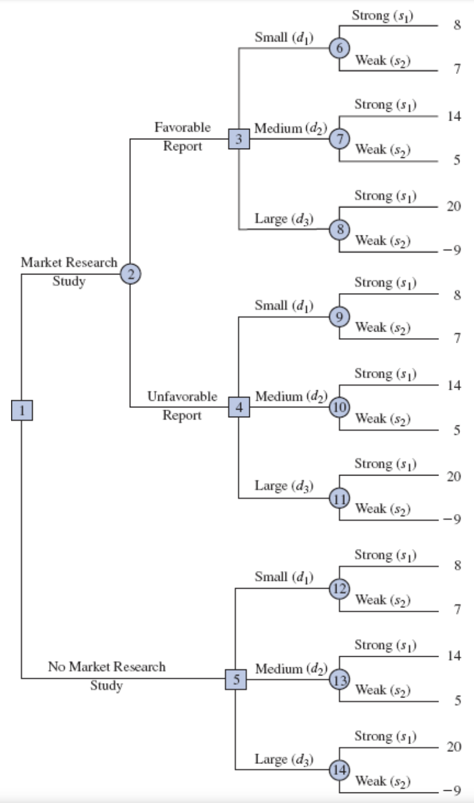
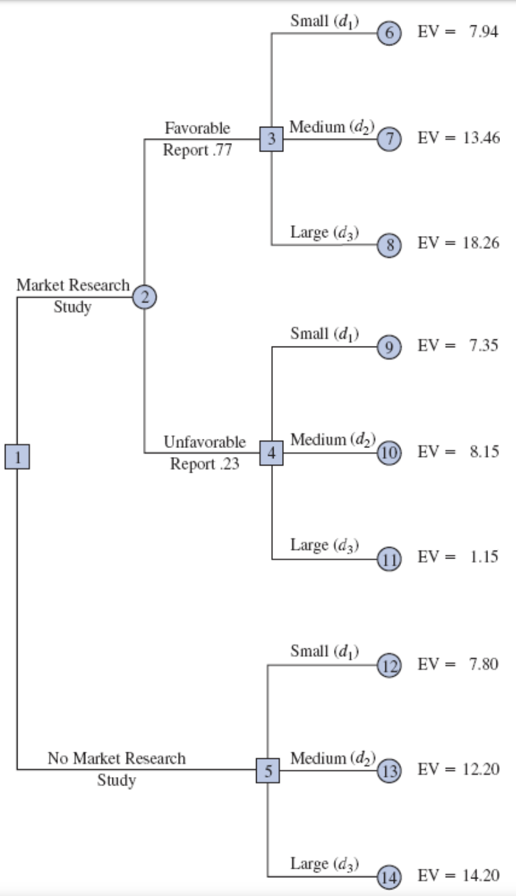
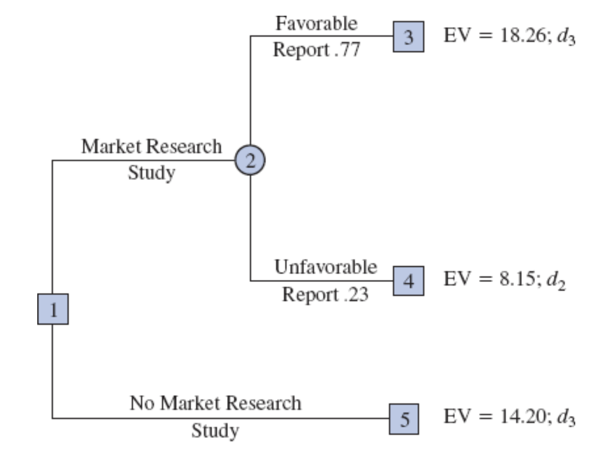
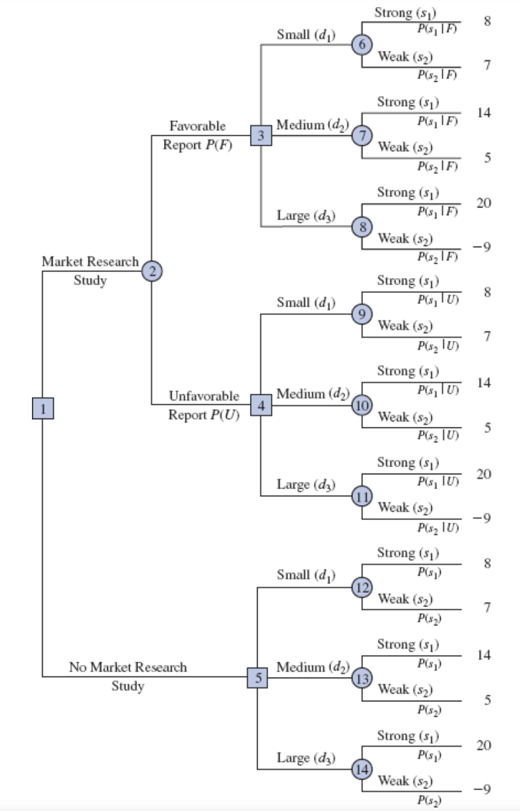

MGMT 30500: Business Statistics
Decision Analysis
Professor
Davi Moreira
Davi Moreira
Overview
Problem formulation.
Chance Events and States of Nature.
Payoff tables.
Decision trees.
Decision Making with Probabilities.
- Expected Value Approach
- Expected Value of Perfect Information (EVPI)
- Expected Value with Sample Information (EVSI)
Bayes’ theorem to compute branch probabilities for decision trees.
Decision Analysis
Problem Formulation
The first step in the decision analysis process is problem formulation.
It can be a verbal statement of the problem. Then, we identify the decision alternatives, the uncertain future events, referred to as chance events, and the consequences associated with each decision alternative and each chance event outcome.
Example: Pittsburgh Development Corporation (PDC)
Pittsburgh Development Corporation (PDC) has purchased land to develop a luxury condominium complex with individual units priced between $300,000 and $1,400,000.
Decision Problem: PDC’s primary decision challenge is to determine the optimal size of the condominium project that will maximize profits, considering the uncertainty of future demand for these units.
Project Options: PDC has commissioned architectural plans for three potential project sizes:
- Small Complex: 30 condominiums
- Medium Complex: 60 condominiums
- Large Complex: 90 condominiums
Key Considerations: The financial viability and success of the project depend on:
- The selected project size (small, medium, or large)
- Future demand for the condominiums, an uncertain factor influencing profitability
PDC must analyze both the scale of the project and demand uncertainty to make an informed, profitable decision.
Example: PDC’s Decision Alternatives
It is clear that the decision is to select the best size for the condominium complex.
PDC has the following three decision alternatives:
\[ d_1 = \text{a small complex with 30 condominiums} \]
\[ d_2 = \text{a medium complex with 60 condominiums} \]
\[ d_3 = \text{a large complex with 90 condominiums} \]
Chance Events and States of Nature in Decision Analysis
In decision analysis, uncertain future events like demand levels are known as chance events.
The possible outcomes of these events are called states of nature, with only one state ultimately occurring.
Example: States of Nature for the PDC Project
A key factor in PDC’s decision-making process is the uncertainty surrounding demand for the condominiums.
For PDC’s condominium project, the two relevant states of nature regarding demand are:
\[ s_1 = \text{Strong demand for the condominiums} \]
\[ s_2 = \text{Weak demand for the condominiums} \]
By defining these states of nature, PDC can structure its decision-making process to account for demand uncertainty and evaluate the impact of each demand scenario on project profitability.
Example: Sequence of Decisions and Consequences
The decision analysis process follows a structured sequence to ensure optimal decision-making:
Select a Decision Alternative: Management begins by choosing a project size (complex size) from the available options (small, medium, or large complex).
State of Nature Occurs: After the decision, an uncertain demand scenario—known as the state of nature—will materialize. In this case, it could be: Strong Demand or Weak Demand.
Observe the Consequence: Based on the chosen project size and the actual demand, a consequence will occur. For PDC, the consequence is represented as profit or loss from the project.
By following this sequence, PDC can better understand potential outcomes and make informed decisions to maximize profitability.
Payoff Tables
Payoff Tables
To determine the optimal complex size, PDC must evaluate the consequence of each decision alternative under different demand scenarios. For the purpose of choosing the best Payoff, we use Payoff Tables.
Key Concepts
Payoff: The result (profit or loss) from a specific combination of a decision alternative (complex size) and a state of nature (demand).
Payoff Table: A table that organizes payoffs for all possible combinations of decision alternatives and states of nature, providing a structured view of potential outcomes.
By analyzing the payoff table, PDC can make an informed decision that aligns with their profitability goals.
Example: Payoff Table
The payoff table will show projected profits (in millions of dollars) for each combination of decision alternative (complex size) and state of nature (demand).
| Decision Alternative / State of Nature | Strong Demand (\(s_1\)) |
Weak Demand (\(s_2\)) |
| Small complex (\(d_1\)) | 8 | 7 |
| Medium complex (\(d_2\)) | 14 | 5 |
| Large complex (\(d_3\)) | 20 | -9 |
Example: Interpreting Payoffs
Since PDC’s goal is to maximize profit, profit is used as the payoff measure in this case.
- Notation: We use \(V_{ij}\) to denote the payoff for decision alternative \(i\) under state of nature \(j\).
From the Payoff Table:
\(V_{31} = 20\): A payoff of $20 million occurs if PDC builds a large complex (\(d_3\)) and demand is strong (\(s_1\)).
\(V_{32} = -9\): A loss of $9 million occurs if PDC builds a large complex (\(d_3\)) and demand is weak (\(s_2\)).
These payoff values help PDC evaluate the potential financial outcomes of each decision under different demand scenarios, guiding them toward the most profitable choice.
Decision Trees
Decision Trees
A decision tree graphically shows the sequential nature of the decision-making process.
The Figure presents a decision tree for the PDC problem, demonstrating the natural or logical progression that will occur over time.
First, PDC must make a decision regarding the size of the condominium complex (\(d_1\), \(d_2\), or \(d_3\)).
Then, after the decision is implemented, either state of nature \(s_1\) or \(s_2\) will occur.
The number at each end point of the tree indicates the payoff associated with a particular sequence. For example:
The topmost payoff of 8 indicates an $8 million profit if PDC constructs a small condominium complex (\(d_1\)) and demand is strong (\(s_1\)).
The next payoff of 7 indicates an anticipated profit of $7 million if PDC constructs a small condominium complex (\(d_1\)) and demand is weak (\(s_2\)).
Thus, the decision tree shows the sequences of decision alternatives and states of nature, providing the six possible payoffs.
Explanation of the Decision Tree
The decision tree has four nodes, numbered 1–4, representing decisions and chance events:
Decision nodes (squares): Represent points where a decision must be made. Node 1 is the decision node.
Chance nodes (circles): Represent points where the outcome depends on chance. Nodes 2, 3, and 4 are chance nodes.
Branches: Branches leaving the decision node correspond to decision alternatives (small, medium, or large complex).
Branches: Branches leaving each chance node correspond to the states of nature (strong or weak demand).
Payoffs: are shown at the end of each branch.
Decision Making with Probabilities
Decision Making with Probabilities
With the decision alternatives and the states of nature established, our next step is to determine the probabilities for each state of nature.
There are several methods to assign probabilities:
Classical method: Based on logical analysis, typically used when outcomes are equally likely.
Relative frequency method: Uses historical or empirical data to estimate probabilities.
Subjective method: Relies on expert judgment or intuition when data is scarce or unavailable.
With these probabilities in hand, we apply the expected value approach to calculate the expected payoff for each decision alternative by weighting possible outcomes according to their probabilities.
The decision alternative with the highest expected value is then identified as the best or recommended choice for the problem.
Expected Value Approach
The probabilities for the states of nature must satisfy the basic requirements for assigning probabilities.
We begin by defining the expected value of a decision alternative. Let:
\(N\) = the number of states of nature
\(P(s_j)\) = the probability of state of nature \(s_j\)
Because one and only one of the \(N\) states of nature can occur, the probabilities must satisfy two conditions:
Non-negativity: \[ P(s_j) \geq 0 \quad \text{for all states of nature} \]
Total probability: \[ \sum_{j=1}^{N} P(s_j) = P(s_1) + P(s_2) + \cdots + P(s_N) = 1 \]
Expected Value Calculation
The expected value (EV) of decision alternative \(d_i\) is as follows:
\[ \text{EV}(d_i) = \sum_{j=1}^{N} P(s_j) V_{ij} \]
where:
- \(V_{ij}\) = the value of the payoff for decision alternative \(d_i\) and state of nature \(s_j\).
In words, the expected value of a decision alternative is the sum of weighted payoffs for the decision alternative. The weight for a payoff is the probability of the associated state of nature and therefore the probability that the payoff will occur.
Example: Calculation of Expected Value
PDC is optimistic about the potential demand for its luxury high-rise condominium complex. Based on this optimism, PDC assigns subjective probabilities to represent the likelihood of each demand scenario:
- Probability of strong demand (\(s_1\)): \(P(s_1) = 0.8\)
- Probability of weak demand (\(s_2\)): \(P(s_2) = 0.2\)
Using these probabilities and the associated payoffs, we calculate the expected value (EV) for each decision alternative:
Small complex (\(d_1\)): \[ \text{EV}(d_1) = 0.8(8) + 0.2(7) = 7.8 \]
Medium complex (\(d_2\)): \[ \text{EV}(d_2) = 0.8(14) + 0.2(5) = 12.2 \]
Large complex (\(d_3\)): \[ \text{EV}(d_3) = 0.8(20) + 0.2(-9) = 14.2 \]
By comparing the expected values, we find that the large complex (\(d_3\)) yields the highest expected value of $14.2 million. Therefore, according to the expected value approach, the large complex is the recommended decision.
Applying the Expected Value Approach Using Decision Trees

The calculations required to identify the decision alternative with the best expected value can be conveniently carried out on a decision tree.
Working backward through the decision tree, we first compute the expected value at each chance node; that is, at each chance node, we weight each possible payoff by its probability of occurrence. By doing so, we obtain the expected values for nodes 2, 3, and 4.
Summary of Expected Value Approach Using Decision Trees
The decision maker controls the choice at each decision node aiming to maximize the expected profit. At decision node 1, the expected value approach identifies the best decision alternative as:
- Decision \(d_3\): Constructing the large condominium complex, which yields an expected value of $14.2 million.
This recommendation of \(d_3\) is consistent with both the decision tree analysis and the expected value calculations derived from the payoff table.
Using the expected value approach in conjunction with the decision tree provides a clear and structured framework for selecting the optimal decision based on projected profits.
Expected Value of Perfect Information (EVPI)
Expected Value of Perfect Information (EVPI)
This study could provide valuable information to refine the probability assessments for the different states of nature (e.g., strong or weak demand).
To understand the potential value of this information, we assume the study could yield perfect information — meaning PDC would know, with certainty, which state of nature will occur before making a decision.
Given this perfect information, we can develop an optimal decision strategy.
We can quantify how much PDC should be willing to pay for this perfect information by calculating the Expected Value of Perfect Information (EVPI).
Payoff Table for the PDC Condominium Project ($ Millions)
| Decision Alternative | Strong Demand \(s_1\) | Weak Demand \(s_2\) |
|---|---|---|
| Small complex, \(d_1\) | 8 | 7 |
| Medium complex, \(d_2\) | 14 | 5 |
| Large complex, \(d_3\) | 20 | -9 |
Decision Strategy with Perfect Information
With perfect information about the states of nature, PDC can tailor its decision strategy to maximize profits based on certainty about demand:
- If PDC knows with certainty that strong demand (\(s_1\)) will occur:
- The optimal decision is to select the large complex (\(d_3\)), resulting in a payoff of $20 million.
- If PDC knows with certainty that weak demand (\(s_2\)) will occur:
- The optimal decision is to select the small complex (\(d_1\)), resulting in a payoff of $7 million.
This decision strategy demonstrates the value of perfect information by showing how it would enable PDC to make the most profitable choice in each scenario.
Expected Value of this Decision Strategy
To compute the expected value with perfect information, we return to the original probabilities for the states of nature:
- \(P(s_1) = 0.8\)
- \(P(s_2) = 0.2\)
So, the expected value of the decision strategy based on perfect information is:
\[ 0.8(20) + 0.2(7) = 17.4 \]
We refer to the expected value of $17.4 million as the expected value with perfect information (EVwPI).
Expected Value of Perfect Information (EVPI)
In general, the expected value of perfect information (EVPI) is computed as follows:
\[ \text{EVPI} = | \text{EVwPI} - \text{EVwoPI} | \]
where:
EVPI = expected value of perfect information
EVwPI = expected value with perfect information about the states of nature
EVwoPI = expected value without perfect information about the states of nature
Note the role of the absolute value. For minimization problems, information helps reduce or lower cost; thus, the expected value with perfect information is less than or equal to the expected value without perfect information. In this case, EVPI is the magnitude of the difference between EVwPI and EVwoPI.
Example: Expected Value of Perfect Information (EVPI)
The expected value with perfect information is $17.4 million, and the expected value without perfect information (EVwoPI) is $14.2 million. Therefore, the expected value of perfect information (EVPI) is:
\[ \text{EVPI} = 17.4 - 14.2 = 3.2 \]
In other words, $3.2 million represents the additional expected value that can be obtained if perfect information were available about the states of nature.
Given the EVPI of $3.2 million, PDC might seriously consider a market survey as a way to obtain more information about the states of nature.
Decision Analysis with Sample Information
Decision Analysis with Sample Information
Additional information is often obtained through sample information, which provides insights into the likely states of nature. Common sources of sample information include:
- Raw material sampling
- Product testing
- Market research studies
Using sample information, decision makers can update their prior probability estimates. These revised probabilities, adjusted based on new data, are referred to as posterior probabilities.
Market Research Study for PDC
Let’s assume that PDC manager is considering a six-month market research study designed to learn more about potential market acceptance of the PDC condominium project.
She anticipates that the market research study will provide one of the following two results:
Favorable report: A significant number of the individuals contacted express interest in purchasing a PDC condominium.
Unfavorable report: Very few of the individuals contacted express interest in purchasing a PDC condominium.
Decision Tree with Market Research Study
The decision tree for the PDC problem with sample information shows the logical sequence for the decisions and the chance events.
PDC’s management must decide whether the market research should be conducted.
If it is conducted, PDC’s management must be prepared to make a decision about the size of the condominium project if:
- the market research report is favorable or
- the market research report is unfavorable.

Analysis of Decision Tree Structure
In the decision tree diagram:
Squares represent decision nodes, where PDC actively makes a choice.
Circles represent chance nodes, where the outcome is determined by probability rather than a decision.
Key Nodes in the Decision Tree
- Decision Node 1:
- PDC must decide whether to conduct a market research study.
- Chance Node 2:
- If the study is conducted, the outcome—favorable or unfavorable report—is determined by chance, as PDC has no control over this result.
- Decision Node 3:
- If the report is favorable, PDC must choose the size of the complex (small, medium, or large) based on this information.
- Decision Node 4:
- If the report is unfavorable, PDC again chooses the size of the complex (small, medium, or large), this time with the knowledge of an unfavorable market assessment.
- Chance Nodes 6 to 14:
- These nodes represent the final demand outcomes (strong or weak) for each decision path. Here, the actual state of nature—strong demand or weak demand—is determined by chance.
Probabilities for Market Research Study
PDC developed the following branch probabilities.
If the market research study is undertaken,
\[ P(\text{Favorable report}) = P(F) = 0.77 \]
\[ P(\text{Unfavorable report}) = P(U) = 0.23 \]
If the market research report is favorable,
\[ P(\text{Strong demand given a favorable report}) = P(s_1 | F) = 0.94 \]
\[ P(\text{Weak demand given a favorable report}) = P(s_2 | F) = 0.06 \]
If the market research report is unfavorable,
\[ P(\text{Strong demand given an unfavorable report}) = P(s_1 | U) = 0.35 \]
\[ P(\text{Weak demand given an unfavorable report}) = P(s_2 | U) = 0.65 \]
If the market research report is not undertaken, the prior probabilities are applicable:
\[ P(\text{Strong demand}) = P(s_1) = 0.80 \]
\[ P(\text{Weak demand}) = P(s_2) = 0.20 \]

Decision Strategy
The approach used to determine the optimal decision strategy is based on a backward pass through the decision tree using the following steps:
At chance nodes, compute the expected value by multiplying the payoff at the end of each branch by the corresponding branch probability.
At decision nodes, select the decision branch that leads to the best expected value. This expected value becomes the expected value at the decision node.
Decision Strategy
Starting the backward pass calculations by computing the expected values at chance nodes 6 to 14 provides the following results:
\[ \begin{align*} \text{EV(Node 6)} &= 0.94(8) + 0.06(7) = 7.94 \\ \text{EV(Node 7)} &= 0.94(14) + 0.06(5) = 13.46 \\ \text{EV(Node 8)} &= 0.94(20) + 0.06(-9) = 18.26 \\ \text{EV(Node 9)} &= 0.35(8) + 0.65(7) = 7.35 \\ \text{EV(Node 10)} &= 0.35(14) + 0.65(5) = 8.15 \\ \text{EV(Node 11)} &= 0.35(20) + 0.65(-9) = 1.15 \\ \text{EV(Node 12)} &= 0.80(8) + 0.20(7) = 7.80 \\ \text{EV(Node 13)} &= 0.80(14) + 0.20(5) = 12.20 \\ \text{EV(Node 14)} &= 0.80(20) + 0.20(-9) = 14.20 \\ \end{align*} \]

Selecting Best Decisions
Next, move to decision nodes 3, 4, and 5. For each of these nodes, select the decision alternative branch that leads to the best expected value.
At node 3, the choices are:
- Small complex branch: EV(Node 6) = 7.94
- Medium complex branch: EV(Node 7) = 13.46
- Large complex branch: EV(Node 8) = 18.26
The best decision is the large complex, with EV(Node 3) = 18.26.
At node 4, we select the best expected value from nodes 9, 10, and 11. The best decision is the medium complex, with EV(Node 4) = 8.15.
For node 5, we select the best expected value from nodes 12, 13, and 14. The best decision is the large complex, with EV(Node 5) = 14.20.
PDC Decision Tree After Choosing Best Decisions at Nodes 3, 4, and 5

Selecting Best Decisions
The expected value at chance node 2 can now be computed as follows:
\[ \begin{align*} \text{EV(Node 2)} &= 0.77 \times \text{EV(Node 3)} + 0.23 \times \text{EV(Node 4)} \\ &= 0.77(18.26) + 0.23(8.15) = 15.93 \end{align*} \]
This calculation reduces the decision tree to one involving only the two decision branches from node 1.
PDC Decision Tree Reduced to Two Decision Branches

Final Decision Strategy
At decision node 1, PDC can determine the optimal choice by comparing the expected values from nodes 2 and 5.
The highest expected value is 15.93, which supports the decision to conduct the market research study.
The Optimal Decision Strategy for PDC is to conduct the market research study and then carry out the following decision strategy:
If the market research is favorable: Construct the large condominium complex to maximize profits (\(d_3\)).
If the market research is unfavorable: Construct the medium condominium complex as a safer choice under lower demand expectations (\(d_2\)).
PDC Decision Tree After Choosing Best Decisions at Nodes 3, 4, and 5
Summary of Decision Tree Analysis
Work backward through the tree to calculate expected values at each chance node.
Select the optimal decision branch at each decision node based on these expected values.
The resulting sequence of optimal branches forms the final decision strategy for maximizing expected profit.
By systematically calculating expected values and selecting the best options at each node, PDC arrives at a data-driven decision strategy that adapts based on the information received from the market research study.
Expected Value of Sample Information Formula
\[ \text{EVSI} = |\text{EVwSI} - \text{EVwoSI}| \]
where:
- EVSI = expected value of sample information
- EVwSI = expected value with sample information about the states of nature
- EVwoSI = expected value without sample information about the states of nature
Note the role of the absolute value. For minimization problems, the expected value with sample information is always less than or equal to the expected value without sample information.
Example: Expected Value of Sample Information (EVSI)
The expected value associated with the market research study is $15.93.
Before, we saw that the best expected value if the market research study is not undertaken is $14.20. Thus, we can conclude that the difference is:
\[ \text{EVSI} = 15.93 - 14.20 = 1.73 \]
that is the expected value of sample information (EVSI).
To conclude, conducting the market research study adds $1.73 million to the PDC expected value.
Computing Branch Probabilities Using Bayes’ Theorem
Computing Branch Probabilities Using Bayes’ Theorem
The branch probabilities for the PDC decision tree chance nodes were specified in the problem description, with no computations initially required.
PDC developed the following branch probabilities.
If the market research study is undertaken,
\[ P(\text{Favorable report}) = P(F) = 0.77 \]
\[ P(\text{Unfavorable report}) = P(U) = 0.23 \]
If the market research report is favorable,
\[ P(\text{Strong demand given a favorable report}) = P(s_1 | F) = 0.94 \]
\[ P(\text{Weak demand given a favorable report}) = P(s_2 | F) = 0.06 \]
If the market research report is unfavorable,
\[ P(\text{Strong demand given an unfavorable report}) = P(s_1 | U) = 0.35 \]
\[ P(\text{Weak demand given an unfavorable report}) = P(s_2 | U) = 0.65 \]
If the market research report is not undertaken, the prior probabilities are applicable:
\[ P(\text{Strong demand}) = P(s_1) = 0.80 \]
\[ P(\text{Weak demand}) = P(s_2) = 0.20 \]
Computing Branch Probabilities Using Bayes’ Theorem
Now, we will see how Bayes’ theorem can be used to compute branch probabilities for decision trees.
Bayes’ theorem is expressed as:
\[ P(s_j | F) = \frac{P(F | s_j) \cdot P(s_j)}{P(F)} \]
where:
\(P(s_j | F)\) is the posterior probability of state \(s_j\) given a favorable report \(F\).
\(P(F | s_j)\) is the conditional probability of receiving a favorable report given state \(s_j\).
\(P(s_j)\) is the prior probability of state \(s_j\).
\(P(F)\) is the total probability of receiving a favorable report.
Bayes’ Theorem in Decision Trees
Definitions
Let:
- \(F\): Favorable market research report
- \(U\): Unfavorable market research report
- \(s_1\): Strong demand (state of nature 1)
- \(s_2\): Weak demand (state of nature 2)
Key Branch Probabilities
At Chance Node 2: Determine probabilities of a favorable or unfavorable report: \(P(F)\) and \(P(U)\).
At Chance Nodes 6, 7, and 8: Calculate posterior probabilities for demand given a favorable report:
- \(P(s_1 | F)\): Probability of strong demand given a favorable report.
- \(P(s_2 | F)\): Probability of weak demand given a favorable report.
At Chance Nodes 9, 10, and 11: Calculate posterior probabilities for demand given an unfavorable report:
- \(P(s_1 | U)\): Probability of strong demand given an unfavorable report.
- \(P(s_2 | U)\): Probability of weak demand given an unfavorable report.
At Chance Nodes 12, 13, and 14: Use prior probabilities \(P(s_1)\) and \(P(s_2)\) if the market research study is not conducted.

Conditional Probability Calculations
To perform the probability computations, we need two main sets of probabilities:
Prior Probabilities: PDC’s initial assessment of the likelihood of each state of nature:
- \(P(s_1)\): Probability of strong demand.
- \(P(s_2)\): Probability of weak demand.
- Conditional Probabilities: Likelihood of specific market research outcomes (sample information) given each state of nature.
Favorable Report:
- \(P(F | s_1)\): Probability of favorable report given strong demand.
- \(P(F | s_2)\): Probability of favorable report given weak demand.
Unfavorable Report:
- \(P(U | s_1)\): Probability of unfavorable report given strong demand.
- \(P(U | s_2)\): Probability of unfavorable report given weak demand.
These conditional probabilities allow us to use Bayes’ theorem to update prior probabilities based on market research outcomes, leading to more informed decision-making.
Market Research Probabilities Table
We assume that the following assessments are available for these conditional probabilities. This is the key piece of information that we use to compute the branches probabilities.
| State of Nature / Market Research | Favorable, \(F\) | Unfavorable, \(U\) |
|---|---|---|
| Strong demand, \(s_1\) | \(P(F|s_1) = 0.90\) | \(P(U|s_1) = 0.10\) |
| Weak demand, \(s_2\) | \(P(F|s_2) = 0.25\) | \(P(U|s_2) = 0.75\) |
Note: These probability assessments provide a reasonable degree of confidence in the market research study:
- If \(s_1\) is true, \(P(F|s_1) = 0.90\) and \(P(U|s_1) = 0.10\).
- If \(s_2\) is true, \(P(F|s_2) = 0.25\) and \(P(U|s_2) = 0.75\).
Tabular Computation: Branch Probabilities for Favorable Report
Steps for Tabular Probability Computation
Step 1: In column 1, enter the states of nature. In column 2, enter the prior probabilities. In column 3, enter the conditional probabilities of a favorable report \(F\) given each state of nature.
Step 2: In column 4, compute the joint probabilities by multiplying the prior probability values in column 2 by the corresponding conditional probabilities in column 3.
Step 3: Sum the joint probabilities in column 4 to obtain the probability of a favorable report, \(P(F)\).
Step 4: Divide each joint probability in column 4 by \(P(F) = 0.77\) to obtain the revised or posterior probabilities, \(P(s_1|F)\) and \(P(s_2|F)\).
| (1) States of Nature \(s_j\) |
(2) Prior Probabilities \(P(s_j)\) |
(3) Conditional Probabilities \(P(F | s_j)\) |
(4) Joint Probabilities \(P(F \cap s_j)\) |
(5) Posterior Probabilities \(P(s_j | F)\) |
|---|---|---|---|---|
| \(s_1\) | 0.8 | 0.90 | \(0.80\times0.90 = 0.72\) | \(\frac{0.72}{0.77}=0.94\) |
| \(s_2\) | 0.2 | 0.25 | 0.05 | 0.06 |
| Total | 1.0 | \(P(F) = 0.77\) | 1.00 |
The Table shows that the probability of obtaining a favorable report is \(P(F) = 0.77\).
In addition:
\(P(s_1|F) = 0.94\)
\(P(s_2|F) = 0.06\)
Note that a favorable report prompts a posterior probability of 0.94 that demand will be strong (\(s_1\)).
Tabular Computation: Branch Probabilities for Unfavorable Report
The tabular probability computation procedure must be repeated for each possible sample information outcome.
Steps for Tabular Probability Computation
Step 1: In column 1, enter the states of nature. In column 2, enter the prior probabilities. In column 3, enter the conditional probabilities of an unfavorable report \(U\) given each state of nature.
Step 2: In column 4, compute the joint probabilities by multiplying the prior probability values in column 2 by the corresponding conditional probabilities in column 3.
Step 3: Sum the joint probabilities in column 4 to obtain the probability of an unfavorable report, \(P(U)\).
Step 4: Divide each joint probability in column 4 by \(P(U) = 0.23\) to obtain the revised or posterior probabilities, \(P(s_1|U)\) and \(P(s_2|U)\).
| (1) States of Nature \(s_j\) |
(2) Prior Probabilities \(P(s_j)\) |
(3) Conditional Probabilities \(P(U | s_j)\) |
(4) Joint Probabilities \(P(U \cap s_j)\) |
(5) Posterior Probabilities \(P(s_j | U)\) |
|---|---|---|---|---|
| \(s_1\) | 0.8 | 0.10 | \(0.8\times0.1=0.08\) | \(\frac{0.08}{0.23}=0.35\) |
| \(s_2\) | 0.2 | 0.75 | 0.15 | 0.65 |
| Total | 1.0 | \(P(U) = 0.23\) | 1.00 |
The probability of an unfavorable report is \(P(U) = 0.23\).
With an unfavorable report:
\(P(s_1|U) = 0.35\)
\(P(s_2|U) = 0.65\)
Note that an unfavorable report prompts a posterior probability of 0.65 that demand will be weak \((s_2)\).
Conclusion
The resulting posterior probabilities provide a clearer understanding of potential outcomes, enabling PDC to select the optimal path based on updated insights. To recap from previous slides:
The Optimal Decision Strategy for PDC is to conduct the market research study and then carry out the following decision strategy, with EV = 15.93:
If the market research is favorable: Construct the large condominium complex to maximize profits (\(d_3\)) with EV = 18.26.
If the market research is unfavorable: Construct the medium condominium complex as a safer choice under lower demand expectations (\(d_2\)) with EV = 8.15.
Summary
Summary
Some key takeaways from this session:
Decision Analysis Structure: A structured approach using payoff tables and decision trees allows for organized, strategic decision-making, particularly in uncertain conditions.
Expected Value Approach: By calculating expected values across different states of nature, we can identify optimal decisions based on probabilistic outcomes, maximizing potential profits.
Value of Information:
- Expected Value of Perfect Information (EVPI): Quantifies the benefit of having certainty about future states, guiding decision-makers on how much to invest in obtaining information.
- Expected Value of Sample Information (EVSI): Measures the potential benefit of additional data (e.g., market research), providing insight on the value of partial or imperfect information.
Bayes’ Theorem in Decision Trees: Allows for updating probabilities based on new evidence (e.g., favorable or unfavorable reports) to make more informed, dynamic decisions.
Decision Trees with Probabilities: Decision trees not only display possible decisions and outcomes but, with added probabilities, allow for more precise expected value calculations.
Optimal Decision Strategy: Analyzing decision trees and recalculating with updated probabilities leads to a final strategy that maximizes expected outcomes based on the best available information.
Summary
| Term | Definition | Purpose | Example |
|---|---|---|---|
| Payoff | Quantitative value of profit/loss for a decision-state combination | Used to evaluate and compare decision alternatives | Building a large complex yields $20 million if demand is high. |
| Results | Actual effects observed after decision and state of nature occur | Evaluate real-world effectiveness of decision | Medium complex yields a realized profit of $14 million. |
| Outputs | Immediate, measurable consequences from the decision | Provide operational metrics | Number of units built, time to completion, occupancy rate. |
| Outcomes | Broader end results, often aligned with goals/objectives | Assess decision’s success in achieving goals | Profit, market reputation, customer satisfaction, future demand |
Thank you!
Business Statistics